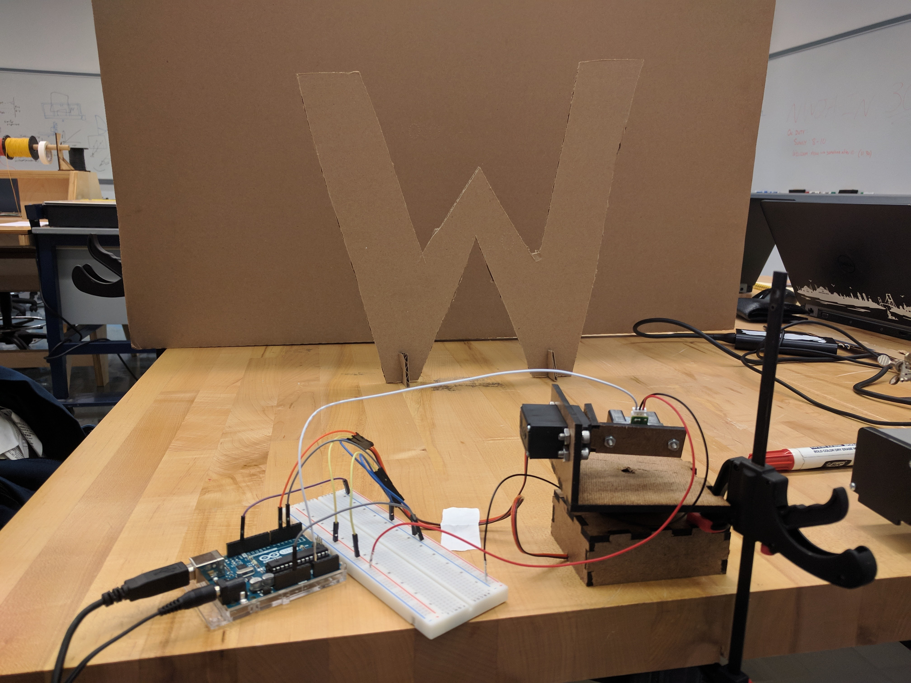
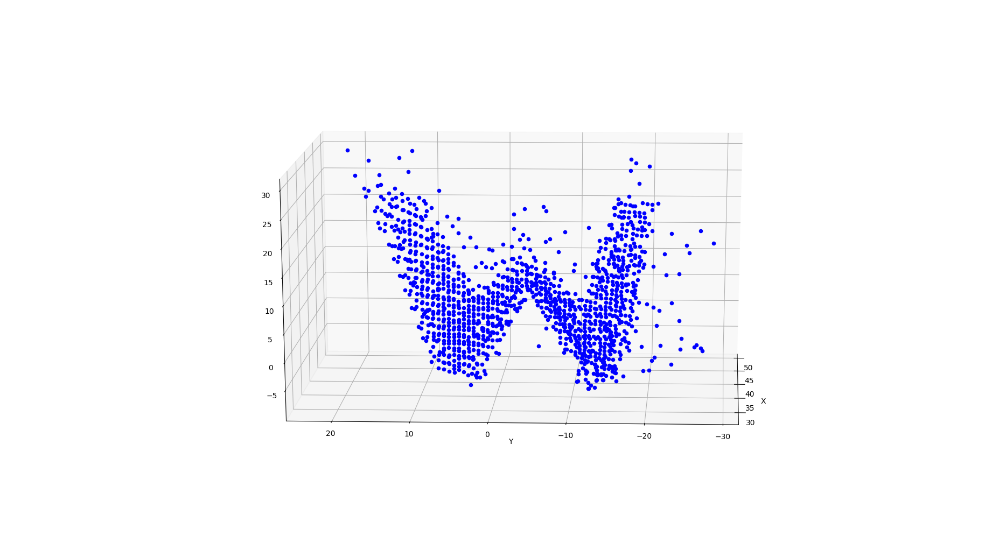

3D Scanner
As part of my Principles of Engineering class, in a team of two, we built a 3D Scanner out of an IR distance sensor and a pan-tilt mechanism - built out of servo motors. Aside from helping calibrate the sensors and helping with circuitry, my main responsibility was to make the pan-ilt mechanism for the scanner.

Since I was not trained to use the 3D printers at Olin until after this project, I decided to use a laser-cutter to make this mechanism out of HDF. I designed all the parts with finger joints in Solidworks, with enough tolerance to account for wood glue that help together the components. As can be seen in the CAD assembly above, the final product consisted of a platform that held one servo in place and two brackets that held the other servo and the IR sensor.
One thing that I failed to think ahead about was the torque that the servos output as they spin. Even though the stand held the the system in place as it was doing a scan, I decided to secure the assembly to the table with bar-clamps, to ensure it does not spin during one of its fast turns. When we were done, we managed to get a really accurate 3D scan of the carboard cut-out "W" letter, as seen in the image below.
- Design: HTML5 UP